Danny DeVito in Tasse
Masterclass
Behandelte Themen: Transformieren, Maskieren, Color-correction, Helligkeit, Schatten einfügen, Spiegelung einfügen, Spezialeffekte
Ausgangsbild
Einzufügendes Bild
1. Transformieren
Um das Bild richtig zu positionieren verwenden wir das Transformieren Tool.
Markiere mit dem Rechteck Tool den gewünschten Teil vom Bild, den du verschieben willst.
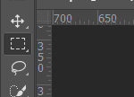Drücke STRG+T um die Auswahl zu positionieren. Drücke abschließend ENTER um die Änderung zu übernehmen.

2. Maskieren
Um das objekt vom Hintergrund zu trennen gibt es einige Möglichkeiten. Hier verwenden wir den Zeichenstift 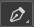
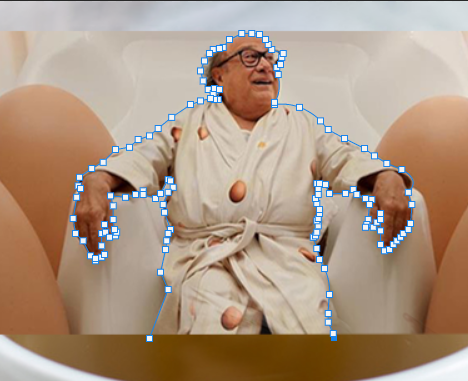Zeichne einen Pfad, der das Objekt umrahmt, das du ausschneiden möchtest und erstelle anschließend eine Vektormaske.
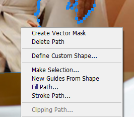3. Helligkeit und Farbton anpassen
Da Danny DeVito zu dunkel ist, verändern wir die Werte ein wenig. Klicke rechts unten auf 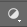. Dann auf Kurven und erhöhe die Helligkeit wie folgt.
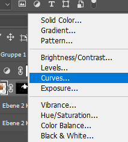 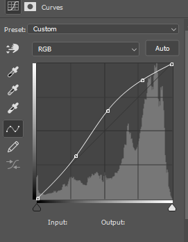Die Tonwertkurve verändert die Farben vom gesamten Projekt. Um nur die direkt darunterliegende Ebene anzusprechen drückst du ALT+J genau zwischen den zwei Ebenen hinein.
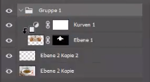Da er zu viel saturiert ist, machen wir was ähnliches mit dem Farbton
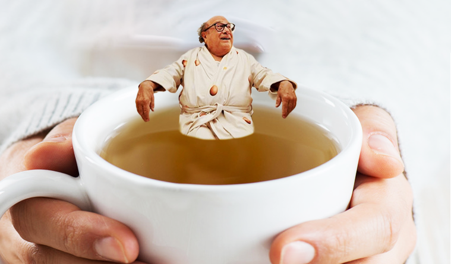Klicke unten recht mit der richtig ausgewählten Ebene auf Farbton und Sättigkeit und stelle die Werte wie folgt ein.
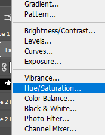 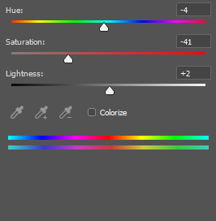4. Schatten einfügen
Dupliziere zu erst die Ebene, von der du einen Schatten machen willst mit ALT+J.
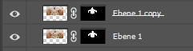Verschiebe dann die kopierte Ebene mit STRG+T ein wenig
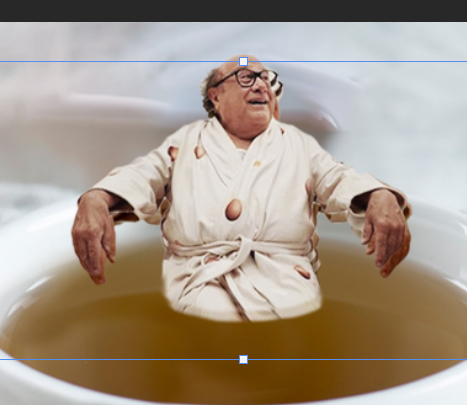Stelle anschließend über die Helligkeit auf das Minimum und den Kontrast auf Maximum
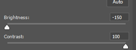Stelle danach die Deckkraft runter.
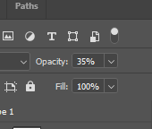5. Reflektion einfügen.
Um eine Reflektion einzufügen kopieren wir wieder die Ebene mit STRG+J. Drücke dann STRG+T um die Ebene zu verschieben und spiegeln über RECHTSKLICK Vertikal spiegeln.
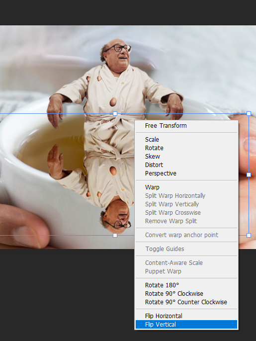Bevor du auf Enter drückst kannst du die Auswahl noch verzerren indem du STRG gedürck hältst und den unteren mittleren Punkt verschiebst.
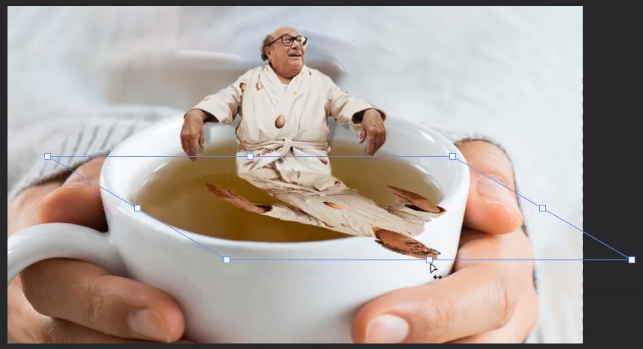Stellen danach die Deckkraft ein wenig herunter
Anschließend kannst du mit einem weich eingestellten schwarzen Pinsel auf der Ebenenmaske die Deckkraft weiters "wegradieren"
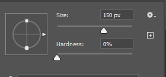 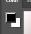 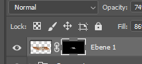6. Spezialeffekte
Für den Abschluss kannst du die erste Ebene wieder Kopieren
Diesmal musst du vorher aber eine elliptische Auswahl um ihn herum machen
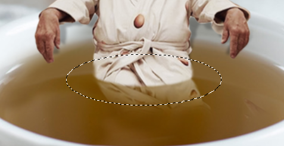Drücke jetzt wieder STRG+J um nur eine Kopie von der Auswahl zu machen
Gehe nachher zu Filter > Verzerrungsfilter > Wellen und stelle folgende Einstellungen ein
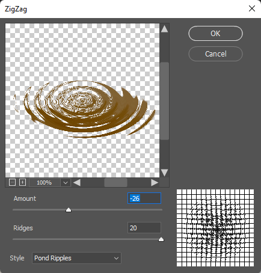Arbeitsschritte in der Übersicht